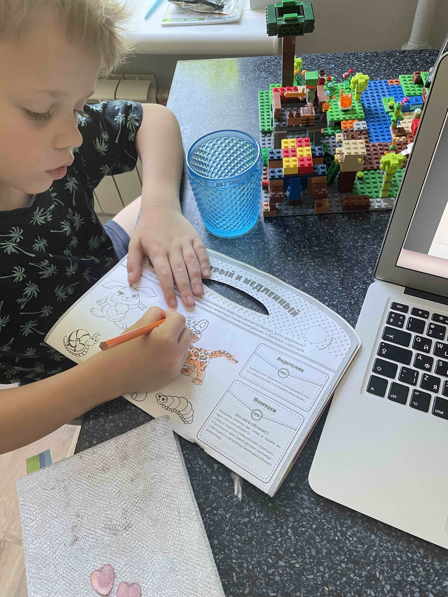
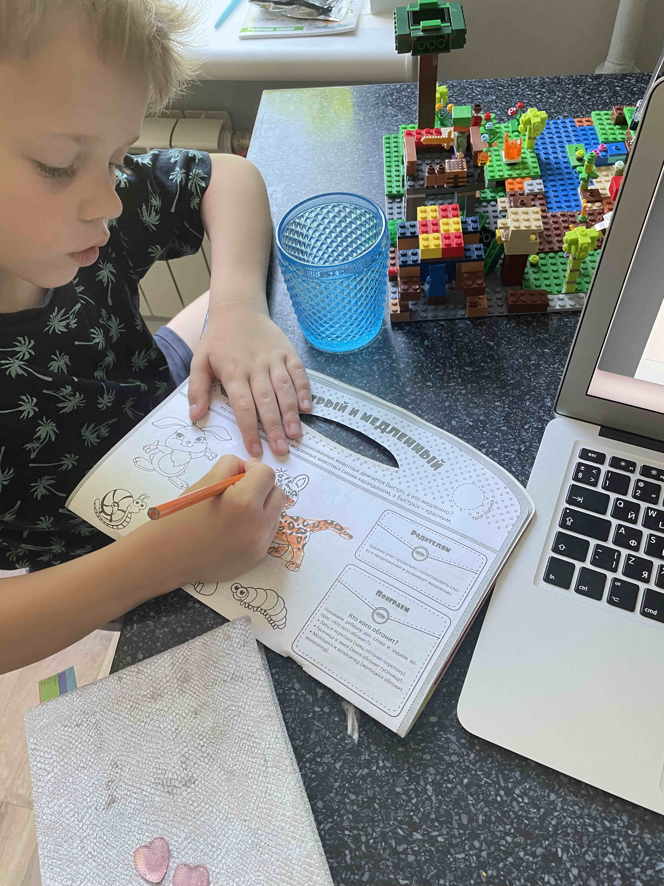
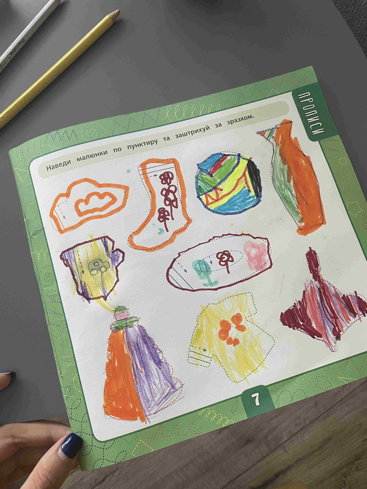
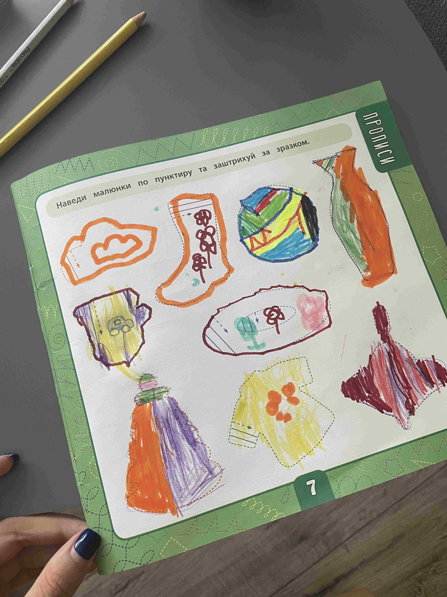

Їх називають «діти сонця». Ці хлопчики і дівчатка, за словами педагогів, надто чутливі, вразливі та відкриті навколишньому світу.
За статистикою, на 800-1000 немовлят одна дитина народжується з синдромом Дауна. Щороку в Україні на світ з’являється від 300 до 400 таких малюків. Майже кожну третю дитину залишають у пологовому будинку. Хвороба Дауна – це генетична патологія. Така дитина може народитися в абсолютно здорових батьків. Як правило, це пов’язано з однією зайвою – 21-ою хромосомою, тобто із хромосомним дисбалансом. У кожної людини 46 хромосом, а в людини з типовою формою хвороби Дауна – 47. 95% випадків патології не передається в спадок.
В Україні проблеми навчання, розвитку, працевлаштування дітей з синдромом Дауна залишаються внутрішньою проблемою родин, які мають таких малюків. Держава не зацікавлена створювати робочі місця для неповносправних людей, а лікарі здебільшого ставлять на них хрест.
За світовою концепцією інвалідності на рівні ООН та Конвенції про права інвалідів, інвалідність трактується як одна з ознак людства, а не як вада. Малюки з генетичними відхиленнями набагато краще розкривають свої можливості, якщо вони живуть удома в атмосфері любові, з ними проводять навчання за спеціальними програмами, а суспільство не відштовхує цих дітей.
Причина – хромосомний «збій»
Зазвичай здорова дитина має 46 хромосом, а при синдромі Дауна їх 47. Через це порушується розумовий і фізичний розвиток дитини.
Розрізняють такі типи синдрому Дауна:
- Стандартна трисомія – «трисомія 21» – спостерігається у 95% хворих. Причина виникнення даного порушення невідома досі.
- У 1 з 100 дітей спостерігається другий тип хвороби Дауна, яка передається як генетичне порушення від батьків. Такий стан називається транслокацією.
- Третій тип – це мозаїчний синдром Дауна, він виникає досить рідко.
Симптоми
Діти з синдромом Дауна найчастіше народжуються при ускладненому перебігу вагітності (наприклад, загроза викидня, токсикози тощо). Середня тривалість вагітності трохи менше, ніж нормальна. Такі діти найчастіше народжуються із зменшеною довжиною і масою тіла, у 50% випадків окружність голови менше 32см.
Відзначається затримка розвитку статичних і мовних функцій: діти починають тримати голову не раніше 4-5 місяців, вони пробують сидіти тільки у віці 8-9 місяців, а перші кроки роблять у 2 роки. Перші слова малюки з синдромом Дауна вимовляють у 1,5-2 роки, а фразове мовлення у них починається приблизно в 4-5 років.
Діагностувати у новонародженого синдром Дауна в більшості випадків можна без ускладнень. Такі діти між собою дуже схожі, тому можна говорити не про діагностику, а про впізнаваність даної хромосомної аномалії. При цій патології у дітей брахіцефальна форма черепа зі згладженим потилицею.
У такої дитини обличчя сплюснуте, внутрішній кут очей розташовується нижче, ніж зовнішній; на райдужці можна побачити світлі плями, перенісся плоске і широке. Вушні раковини маленькі, недорозвинені, розташовуються досить низько. Верхня щелепа у таких дітей недорозвинена, з рота часто виступає «складчастий» збільшений язик, порушується ріст зубів. У таких дітей широкі кисті, пальці на них короткі, можливе викривлення мізинців, на стопі між 1 і 2 пальцями стопи проміжки розширені.
Можливі також інші аномалії розвитку: коротка шия, деформація грудини, недорозвинення тазу… Із-за специфічного будови голосового апарату діти з синдромом Дауна мають трохи хрипкий голос. Вони низькорослі, з порушеною поставою, тулуб і голова під час ходи нахилені вперед, плечі опущені. Шкіра суха, може лущитися, характерний рум’янець на щоках.
Дуже часто спостерігаються недорозвинені зовнішні статеві органи, пахові і пупкові грижі. Можуть також виникати вроджені вади серця або шлунково-кишкового тракту.
При синдромі Дауна розвиваються специфічні дерматогліфічні особливості (шкірний рельєф поверхонь долонь і підошов ): на одній або обох долонях є поперечна борозна, на 5-му пальці – одна згинальна борозна, менше норми завитків на пальця тощо.
Характерне тотальне недорозвинення інтелекту. Мислення у таких дітей характеризується загальмованістю, емоції малодиференційовані й поверхневі.
Однак такі малюки ласкаві і доброзичливі, вони можуть добре засвоїти прості навички і життєві правила.
Мозаїчний варіант захворювання характеризується найчастіше легкою розумовою відсталістю, можливий навіть нормальний інтелект. При «трисомії 21» багато хворих можуть жити самостійно, вони навіть створюють сім’ї і опановують прості професії.
Тривалість життя людей з синдромом Дауна набагато нижча середнього показника і складає в середньому 40-45 років. Пов’язано це з безліччю вад розвитку органів, зниженою опірністю організму і частим розвитком злоякісних новоутворень і хвороб крові.
Діагностика
Діагностувати захворювання можна вже на 15-16 тижні вагітності, досліджуючи навколоплідні води. Обов’язково цей тест показаний мамам, яким більше 35 років, і тим, які народили одну дитину з хворобою Дауна. Також за допомогою цих досліджень можна виявити інші вроджені аномалії та спадкові захворювання.
Пренатальна діагностика (діагностичні процедури, що використовуються в ході обстеження вагітної для виявлення генетичних чи яких-небудь інших аномалій розвитку плоду) включає в себе:
- УЗД – дає можливість побачити вже на 10-14 тижні вагітності збільшений передньо-задній розмір комірцевої зони, а на 12-14 тижні – відсутність кісток носа. На 16-29 тижні помітна надлишкова складка на шиї. Крім того, за допомогою даного методу у плода можна виявити вроджений порок серця, укорочені кінцівки та інші аномалії.
- Визначення біохімічних показників материнської сироватки.
Профілактика
Важливе значення має медико-генетична консультація. Виявивши транс-локаційну форму хвороби, необхідно досліджувати каріотип (набір хромосом) батьків. Виявивши у одного з батьків збалансовану транслокацію (тип хромосомної мутації), при наступних вагітностях необхідно проводити амніоцентез (аналіз амніотичної рідини, що оточує плід у порожнині матки), тому що при цьому збільшується ризик народження малюка з синдромом Дауна.
Догляд, виховання
Таку дитину необхідно оточити увагою і великою любов’ю. Необхідно намагатися максимально використовувати обмежені фізичні і розумові можливості такого малюка. Не засмучуйтеся, якщо він навчається чомусь повільніше, ніж інші діти, намагайтеся радіти його найменшому успіху.
Обов’язково необхідно враховувати вроджені аномалії та захворювання, які часто супроводжують синдром Дауна. Близько 40-60% таких дітей мають порок серця. Крім того, можливі порушення зору і слуху, патологія кишечника і шлунка і т.ін. Вони більше за інших дітей піддаються різноманітним інфекціям, частіше хворіють онкологічними захворюваннями.
У багатьох країнах є спеціальні служби, які допомагають батькам таких дітей. Діти з синдромом Дауна обов’язково повинні спілкуватися з однолітками. Саме тому вони повинні ходити в дитячий садок – спеціалізований, або звичайний, якщо це можливо. Подальше навчання діти з синдромом Дауна набувають в спеціалізованих школах.
В таких установах розроблені спеціальні програми для інтегрування хворих малюків у суспільство. Крім того, там проводиться лікувальна гімнастика, розвивається мова та слух. У спеціалізованих школах хворим дітям допомагають набувати елементарні побутові навички. В деяких випадках діти з хворобою Дауна можуть відвідувати звичайну школу.
Свою інтелектуальну відсталість люди з синдромом Дауна компенсують своєю приголомшливою душевністю, відкритістю і наївністю. Вони дуже добродушні, життєрадісні і позитивні люди, самі охоче прагнуть до спілкування. Чим більше вони спілкуються зі звичайними однолітками в дитячих садах або школах, на майданчиках і в спортивних секціях, тим менш помітне відставання в розвитку, кращий психічний і фізичний розвиток таких дітей.
Діти з синдромом Дауна обдаровані не менш, ніж звичайні діти. Багато хто має художній талант, музичні (в тому числі танцювальні та співочі) і артистичні здібності.
Лише завдяки терпінню і турботі можна виростити людину, не тільки здатну до самообслуговування – вона зможе оволодіти простими навичками праці, виявити свої таланти.
.jpg) 

 
